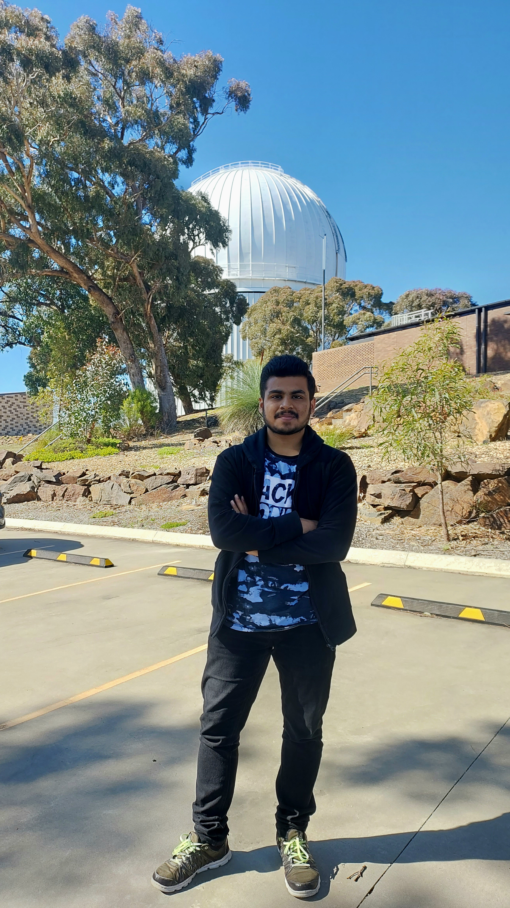

Research Interests
Hi, I’m Pratyush Kumar Das
I build data-driven solutions mainly for astrophysics and communicate complex ideas clearly.
I work with large scientific datasets from high-resolution observations and simulations in galactic astronomy to build tools, create clear visualisations, and uncover meaningful patterns.

I am an astrophysics PhD student at the University of Queensland working on galaxy structure, kinematics, and data-driven modelling. My research combines large IFU spectroscopy surveys such as SAMI, Hector, MAGPI, and MaNGA with modern simulations such as Simba, Illustris, and EAGLE.
I build tools and analysis workflows that connect observations, simulations, and machine learning, with a focus on clear visualisation, reproducibility, and physically motivated modelling. My work often involves building robust pipelines for large scientific datasets and turning complex results into interpretable outputs.
I also contribute to observational astronomy through Hector-related observing runs at the Anglo-Australian Telescope (AAT), including on-site observing support and survey operations experience.
A central theme of my research is understanding how galaxy structure and internal motion co-evolve—especially how rotation-curve shape, morphology, bulge fraction, and angular momentum vary across galaxy populations.
A pipeline for deriving galaxy angular momentum and related structural/kinematic measurements from IFU maps, including density and velocity model fitting, deprojection, cumulative j-profile analysis, and quality flags.
- Rotation-curve modelling with MCMC (
emcee) - Convergence diagnostics on cumulative j profiles
Customising and extending SpaxelSleuth-style workflows for emission-line analysis, metallicity calculations, and export of per-galaxy multi-extension FITS products from tabular data.
- Component-wise quantity grouping into FITS extensions
- Custom CSV → FITS export logic with explicit column control
- Data cleaning/filtering for invalid pixel coordinates
Predicting galaxy properties (stellar mass, HI mass, H2 mass, SFR, metallicity) from dark-matter-only halo properties, including central/satellite handling and star-forming vs quenched classification.
- Classification + regression pipeline design
- Feature selection and Random Forest interpretability
- Applications to intensity-mapping motivated science
Exploratory machine learning and symbolic regression for FP-like relations, including band-wise feature constraints, observed vs simulation-direct parameters, and PySR-based equation discovery.
- Train/eval tracking and Hall-of-Fame parsing
- Comparison of empirical and physically motivated forms
Publications
Selected papers and ongoing manuscripts
A machine-learning framework to populate dark matter haloes with galaxy properties in the Simba simulation, including stellar mass, gas masses, star-formation rate, and metallicity.
Hector survey data processing, quality-control diagnostics, and early-science validation, including reduction and performance assessment workflows.
A SAMI cluster-galaxy study examining ram-pressure-affected populations and spatially resolved quenching trends in dense environments.
Hector Galaxy Survey: Linking the low- and high-mass ends of the Initial Mass Function in Star-Forming Galaxies
Collaborative work on IMF constraints in star-forming galaxies using Hector integral-field spectroscopy. Manuscript currently under review.
Morphology in Motion: Linking Angular Momentum to Galactic Structure in the SAMI Galaxy Survey
Ongoing work connecting galaxy angular momentum, morphology, and structural diagnostics using IFU data, with rotation-curve model selection and convergence/QC analysis.
Fundamental Plane ML / Symbolic Regression (FP-ML)
Machine-learning and symbolic-regression exploration of Fundamental Plane-like relations using band-constrained features and interpretable equations.
Awards & Outreach
Scholarships, recognition, and community engagement
A mix of academic funding, competition achievements, organising roles, and public outreach activities across astronomy and science communities.
Scholarships & Awards
2023–Present
Research Training Program (RTP) Scholarship
University of Queensland — postgraduate research scholarship supporting PhD studies in astrophysics.
2016–2021
INSPIRE Scholarship
MHRD, Government of India — awarded for the five-year integrated M.Sc. program.
2021
1st Place — Physics Speed Quiz Competition (PSQC21)
2020
3rd Place — Annual International Astronomy & Physics Competition (AIAPC20)
2020
Outstanding Performer — NAEST
National Anveshika Experimental Skills Test (link)
2020
National-level Topper (Prelims) — ABHIPRAJNA 2020
IISER Tirupati (preliminary round recognition).
2016
Certified Telescope Handler
International Olympiad on Astronomy and Astrophysics (IOAA) (about IOAA)
2014–2016
Pathani Samanta Mathematics Scholarship
Government of Odisha.
2011
Gold Medal — International Mathematics Olympiad (SOF IMO)
Outreach, Service & Leadership
2024
Harley Wood School for Astronomy — Organising Committee
Helped organise and support the Harley Wood School for Astronomy, a national astronomy school for postgraduate students across Australia.
UQ
Equity, Diversity & Inclusion Committee Member
School of Mathematics and Physics, The University of Queensland. UQ SMP EDI page
UQ SMP
Vice-President (Physics), Students of SMP Postgraduate Association (SOS)
Executive committee member of the School of Mathematics and Physics postgraduate student association at UQ, supporting community-building, student representation, and academic/social initiatives for HDR students. UQ SMP SOS page
Outreach
“Ask an Expert” — Laura Street Festival
Public engagement activity answering astronomy questions and discussing space science with visitors. Festival page/post
NISER
NISER Astronomy Club — Core member
Supported telescope sessions, astronomy outreach events, and student-facing talks. NISER · NISER Astronomy Club
NISER
Vice President, Zaariya Social Service Club
Contributed to education-focused outreach and social service activities. Mentored children from underprivileged communities through local outreach initiatives. NISER
2017
National-level Representation in Cricket
Represented NISER, India at national level; achieved silver at the Inter IISER Sports Meet (IISM) in 2017. IISM 2017 page
Ph.D. Candidate in Astrophysics
School of Mathematics and Physics, The University of Queensland (UQ), Australia
Project: Morphology in Motion: Linking Angular Momentum to Galactic Structure using Machine Learning.
Research focuses on galaxy kinematics, morphology, angular momentum, IFU spectroscopy, and data-driven modelling.
Supervisors: Dr. Sarah Sweet, Dr. Holger Baumgardt, Dr. Simon Deeley
Research Assistant
Worked with Prof. Romeel Davé and Dr. Weiguang Cui on halo-to-galaxy machine learning on the Simba cosmological simulation, focusing on scalable analysis workflows and model development for predicting galaxy properties from dark-matter halo information.
Integrated M.Sc. in Physics
National Institute of Science Education and Research (NISER), Odisha, India
Minor: Computer Science
Class 10+2 (CHSE, Odisha)
Khallikote Junior College, Odisha, India
Class 10 (BSE, Odisha)
Saraswati Shishu Vidya Mandir, Ramaharinagar, Odisha, India
Conferences, Observing Runs & Travel
Selected conferences, workshops, observing runs, and collaboration-related travel in chronological order.
2026
Beyond Hubble (Cambridge)
Planned conference participation focused on galaxy morphology and structural evolution across cosmic time.
2026
HUB2026 (Bahia, Brazil)
Hack-week / collaboration event focused on computational prototyping, astronomy data workflows, and collaborative research development.
2026
ASI 2026 (IIT Guwahati)
44th Annual Meeting of the Astronomical Society of India — planned scientific participation and networking.
2026 / Ongoing
Anglo-Australian Telescope (AAT) Observing Runs
Observing-run participation and coordination linked to Hector-related work, including on-site observing support, data-quality checks, and survey workflows. Hector instrument · Hector Galaxy Survey
Ongoing
Hector / DR Collaboration Work
Ongoing contributions to survey pipeline/QC and collaboration tasks tied to the Hector Galaxy Survey.
2024
Harley Wood School for Astronomy — Organising Committee
Organising/support role for the Australian astronomy postgraduate school.
2020
Chandra Frontiers in Time-Domain Science
Workshop participation (Center for Astrophysics | Harvard & Smithsonian).
2020
5th International Conference on Particle Physics and Astrophysics
Conference participation (listed in CV). Add the exact edition link later if you want.
2020
Physics of the Early Universe (ICTS-TIFR, Bangalore)
ICTS-TIFR program/workshop participation.
2019
Radio Astronomy Winter School (IUCAA, Pune)
Radio astronomy training school participation.
Skills
Technical skills across scientific programming, astronomy data analysis, machine learning, visualisation, and research workflows.
I build research-grade analysis pipelines and tools for large scientific datasets, especially in astronomy. My work includes data cleaning and validation, modelling workflows, uncertainty propagation, quality-control diagnostics, and publication-ready visual outputs. I also work on bridging simulations and observations using machine learning and physically motivated analysis, with a strong focus on reproducibility and clear interpretation.
Programming & Core Tools
Scientific Python & Data Analysis
Statistics, Modelling & ML
Astronomy Data & Research Workflows
Survey & Simulation Ecosystems (Worked With)
Visualisation, Reporting & Communication
Contact
Public contact details
- Name Pratyush Kumar Das
- Affiliation School of Mathematics and Physics, The University of Queensland (UQ)
- Email p.das@uq.edu.au
- GitHub github.com/pkd-45
- ORCID orcid.org/0000-0002-4326-8598